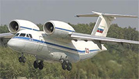
AH-72 Среднемагистральный пассажирский самолет
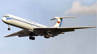
ИЛ-62 Дальнемагистральный пассажирский самолет
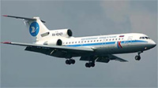
ЯК-42 Ближнемагистральный пассажирский самолет
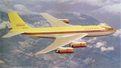
MODEL 707 Многоцелевой транспортно-пассажирский самолет
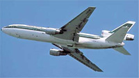
DC-10-30 Среднемагистральный пассажирский самолет
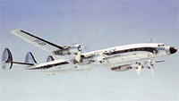
L-1649 STARLINER Среднемагистральный пассажирский самолет
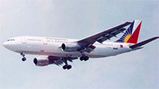
A300 Среднемагистральный пассажирский самолет
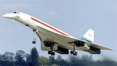
CONCORDE Сверхзвуковой пассажирский самолет
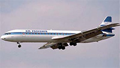
MERCURE Ближемагистральный пассажирский самолет
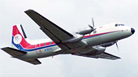
748 Среднемагистральный пассажирский самолет
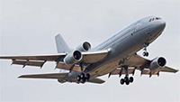
TRISTAR Дальнемагистральный пассажирский самолет
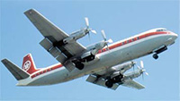
V.950 VANGUARD Среднемагистральный пассажирский самолет
 L-1649 STARLINER Среднемагистральный пассажирский самолет
L-1649 STARLINER Среднемагистральный пассажирский самолет AH-72 Среднемагистральный пассажирский самолет
AH-72 Среднемагистральный пассажирский самолет A300 Среднемагистральный пассажирский самолет
A300 Среднемагистральный пассажирский самолет 748 Среднемагистральный пассажирский самолет
748 Среднемагистральный пассажирский самолет